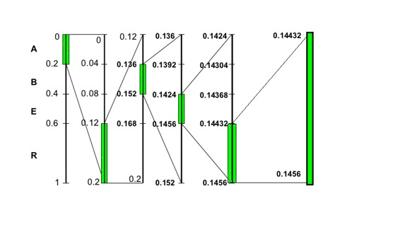

It is recommended to read a similar article before proceeding with this one : LZW (Lempel–Ziv–Welch) Compression technique
Data Compression is the process of reduction in size of data in order to save space or transmission time.
Without compression:
- A 32 bit image with resolution 800*600 will take ((800 X 600)X 32)/(8 X 1024 X 1024) = 1.83 MB.
- A 2000 character text file will take 1.95 KB.
- A 1 minute audio stereo file will take 10 MB.
- A 1 minute video clip will take 2GB space.
Resulting in the requirement of huge disk space & large transmission time. Compression reduces the file size using some mathematical algorithms. A slight disadvantage comes due to the processing time wasted in compression and decompression and involves trade-offs between various factors, including the degree of compression, the amount of distortion introduced ( lossy compression ).
How Compression is possible –
Information usually contains redundancies i.e information is often repeated. Examples include reoccurring letters, numbers or pixels. Compression programs remove this redundancy.
What is Arithmetic Coding –
Arithmetic coding is a common algorithm used in both lossless and lossy data compression algorithms. It is an entropy encoding technique, in which the frequently seen symbols are encoded with fewer bits than rarely seen symbols. It has some advantages over well-known techniques like Huffman coding.
How does Arithmetic coding work –
- It converts the entire input data into a single floating point number n where (0.0 <= n < 1.0).
- The interval is divided into sub-intervals in the ratio of the probability of occurrence frequencies.
- For a startpoint and endpoint of an entire range the lower-limit of a character range is the upper-limit of the previous character given by startpoint + cumulativefrequency X (endpoint -startpoint )
- Therefore, each interval corresponds to one symbol.
- The first symbol restricts the tag position to be in one of the intervals.
- The reduced interval is partitioned recursively as more symbols are processed.
- Observation: once the tag falls into an interval, it never gets out of it.
A Small Example on Arithmetic Coding –
Consider the string "ARBER".
Symbol A B E R
Frequency 1 1 1 2
Probability 20% 20% 20% 40%
So the Initial ranges would respectively be = A[0 – 0.2), B[0.2 – 0.4), E[0.4 – 0.6), R[0.6 – 1)
In the following image we can see the step-wise construction of the arithmetic code :-

At each step the yellowed out portion represents the symbol we want to encode next. The final interval for the input string ARBER is [0.14432, 0.1456). One can choose any number within this range say 0.14432 and convert it into binary which will give us a 51 bit binary code.
/* ARITHMETIC ENCODING ALGORITHM. */
/* Call encode-symbol repeatedly for each symbol in the message. */
/* Ensure that a distinguished "terminator" symbol is encoded last, then */
/* transmit any value in the range [low, high). */
encode-symbol(symbo1, cum-freq)
range = high - low
high = low + range * cum-freq[symbol-1]
low = low + range*cum-freq[symbol]
/* ARITHMETIC DECODING ALGORITHM. */
/* "Value" is the number that has been received. */
/* Continue calling decode-symbol until the terminator symbol is returned. */
decode-symbol(cum-freq)
find symbol such that
cum-freq[symbol] <= (value-low)/(high-low) < cum-freq[symbol-1]
/* This ensures that value lies within the new */
/* (low, high) range that will be calculated by */
/* the following lines of code. */
range = high - low
high = low + range*cum-freq[symbol-1]
low = low + range*cum-freq[symbol]
return symbol